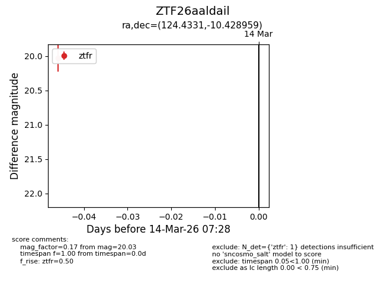
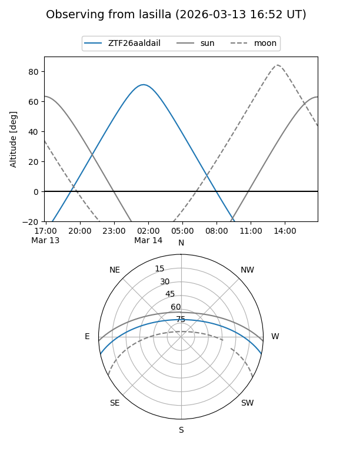
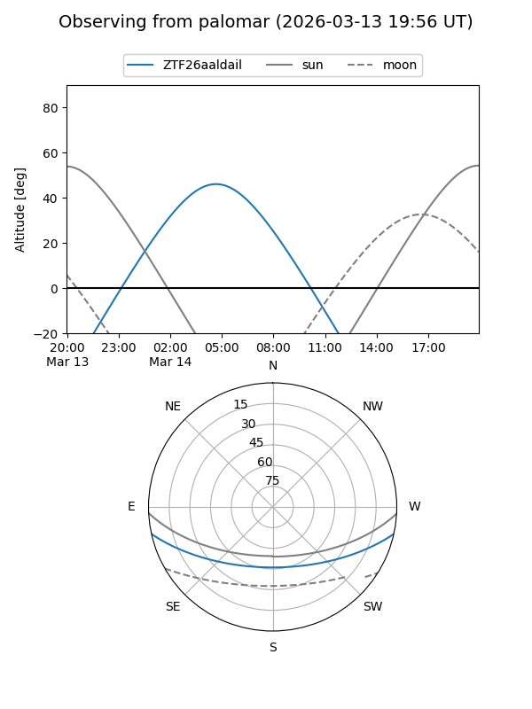

ZTF26aaldail
Target ZTF26aaldail at 2026-03-14 07:30
Aliases and brokers:
FINK: link
Lasair: link
ALeRCE: link
alt names
ZTF26aaldail (ztf,fink_ztf)
Coordinates:
equatorial (ra, dec) = 124.4331,-10.42896
equatorial (HMS+DMS) = 08:17:43.94,-10:25:44.25
galactic (l, b) = (232.5501,+13.84516)
Flags:
Photometry:
last ztfr=20.03
1 ztfr detections
Lightcurve

Visibility


Additional plots